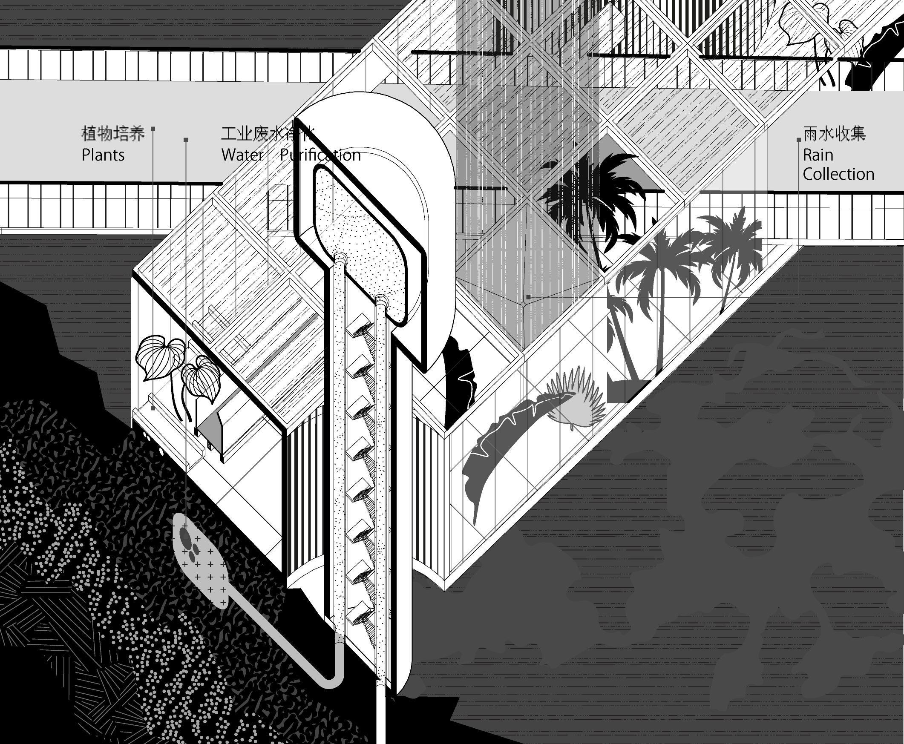
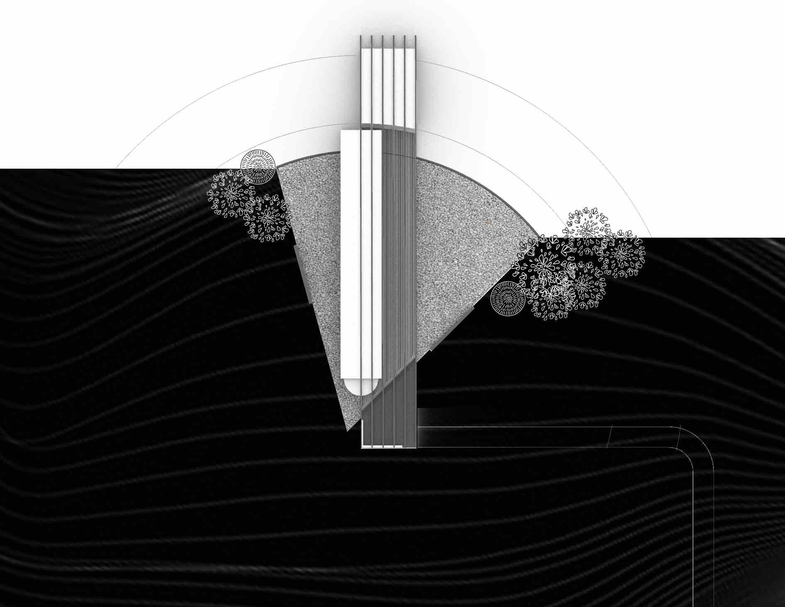
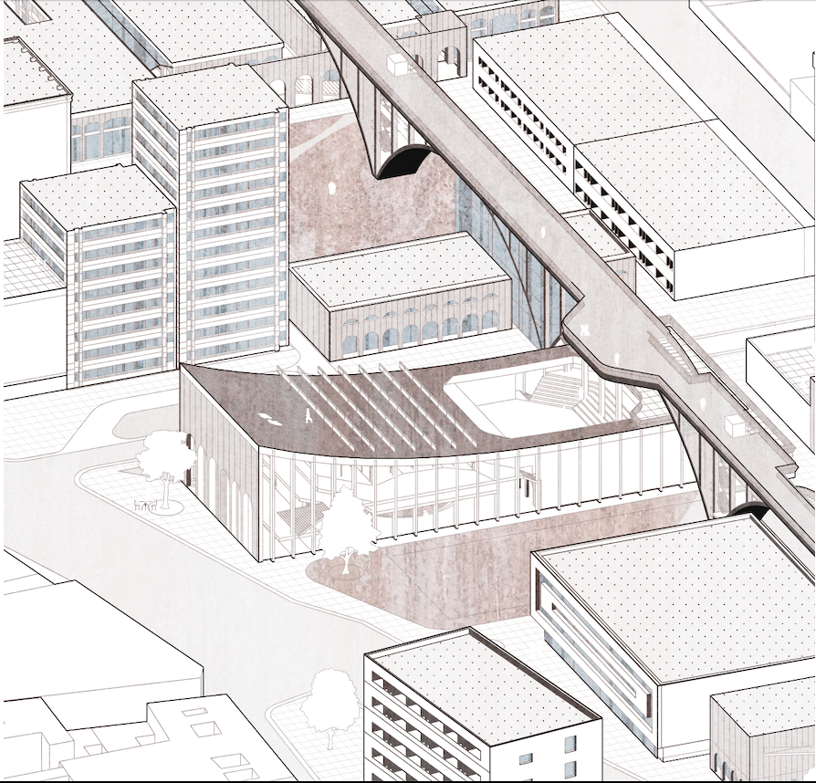
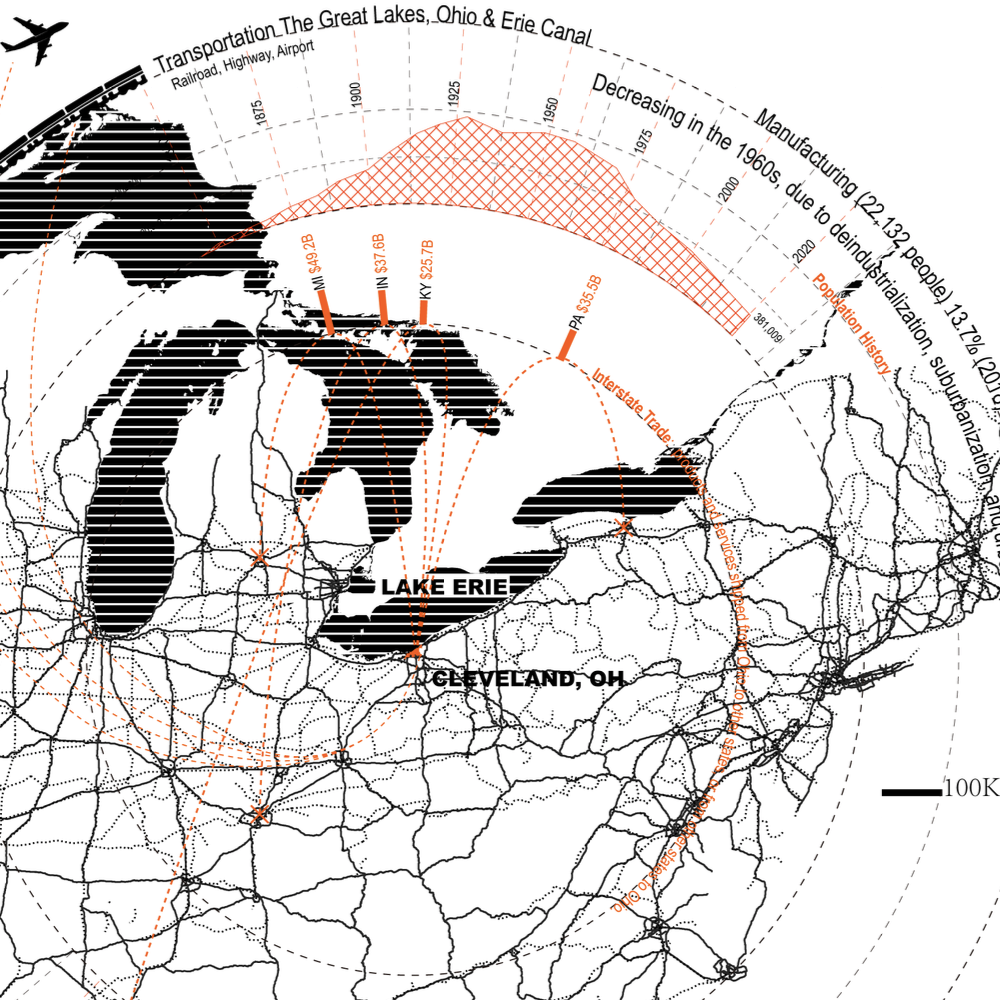

TECH
科技
ARCH
建筑
Y.LIU
WORD
写作
VISU
全图
Infrastructural Phalanstery in Detroit 底特律工业区改造
Decarbonization and Sustainability 去碳化园区 ｜ 20F
The Open Studio 开放工作室
Art Institute Building 艺术系馆 ｜ 16S
Mountain Scroll 卷景别墅
Villa 别墅 ｜ 17F
Post-Colonial Cartagena 后殖民时期的卡塔赫纳
Urban Design 城市更新 ｜ 18S
Terrain Vague in Cleveland 克利夫兰诗意留存
Post-Industrial Urban Theory 后工业化城市研究 ｜ 19F